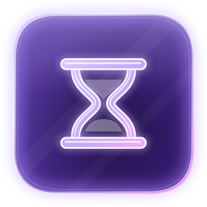
Hourglass
Screen time and lockdown for every site.
Hourglass tracks how long you spend on every site and blocks the distracting ones on a schedule. During lockdown the settings lock too, so you cannot talk yourself out of it in the moment.
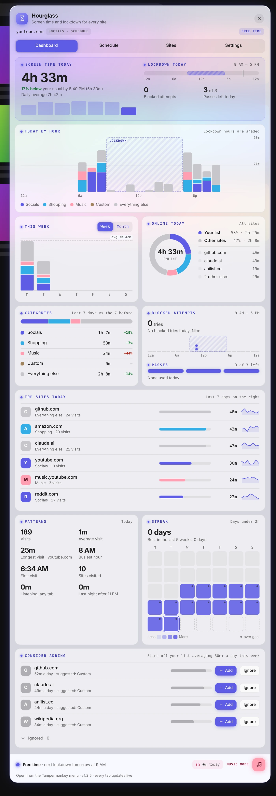
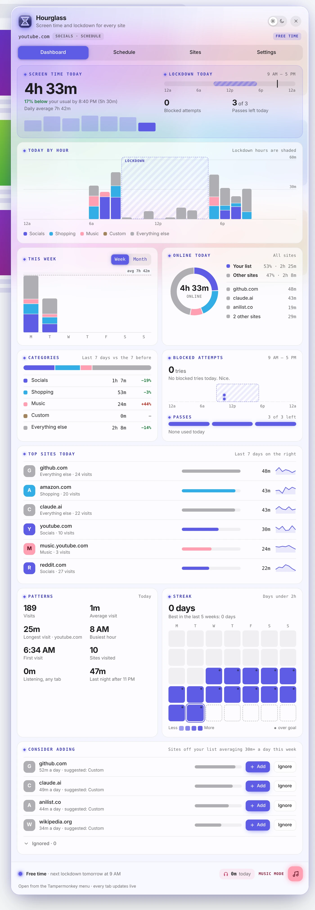
A real dashboard
Today against your average, an hour-by-hour chart with lockdown shaded, week and month views, category trends, top sites and streaks.
A schedule you draw
Drag lockdown blocks onto each day in 30-minute steps, or start from presets like 9–5, evenings or overnight.
Passes, not loopholes
A few daily passes that open only the site you're on, with a timer and a wait to think it over.
Lockdown that holds
An "Is this important?" screen with a delay, and looser settings only kick in after lockdown ends.
Your lists
Socials, Shopping, Music and Custom. Each site can follow the schedule or stay blocked.
Smart suggestions
Sites you spend 30+ minutes a day on get suggested for a list, or you can ignore them.
Music mode
Let music through during lockdown, with listening time tracked apart from screen time.
Late-night nudge
A friendly reminder to take a break when you're still browsing past bedtime.
On your phone too
The same script switches to a bottom-sheet menu on phones, with a trimmed dashboard, bigger touch targets and tap-for-details charts. Listening time stays on the PC.
Private by design
Everything stays on your device, and only site names are kept, never full addresses or page titles.
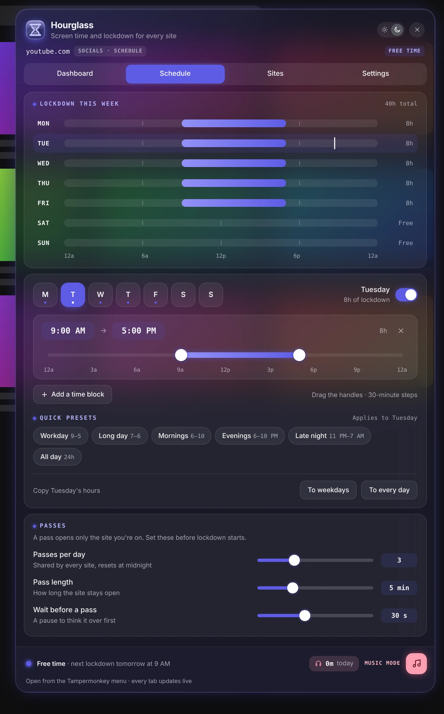
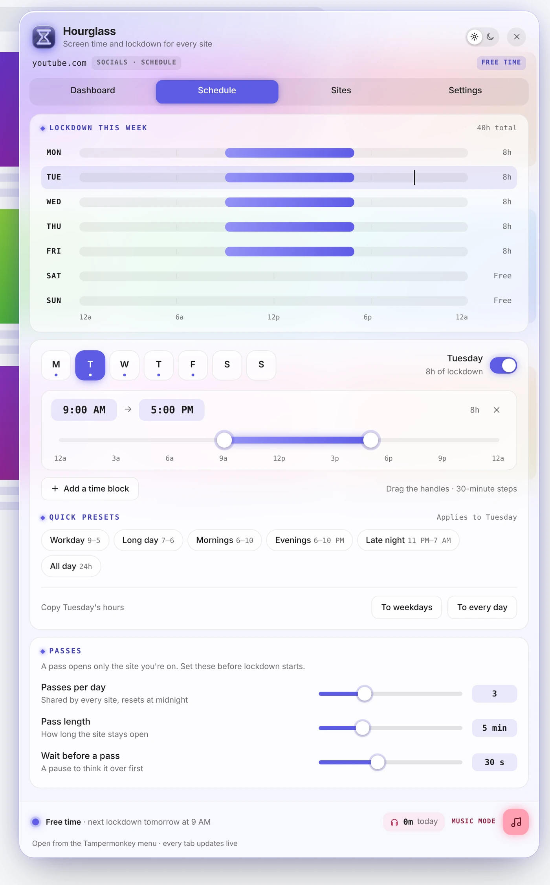
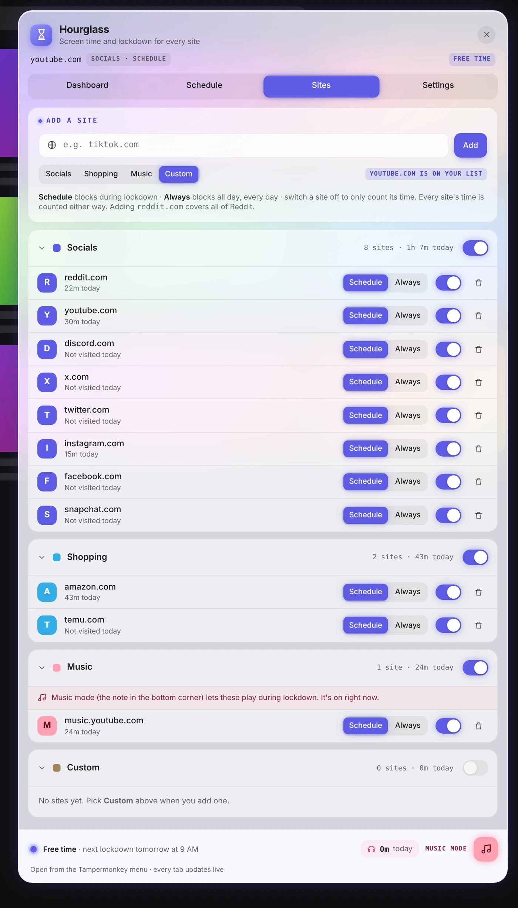
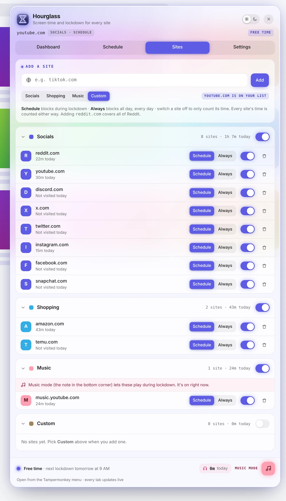
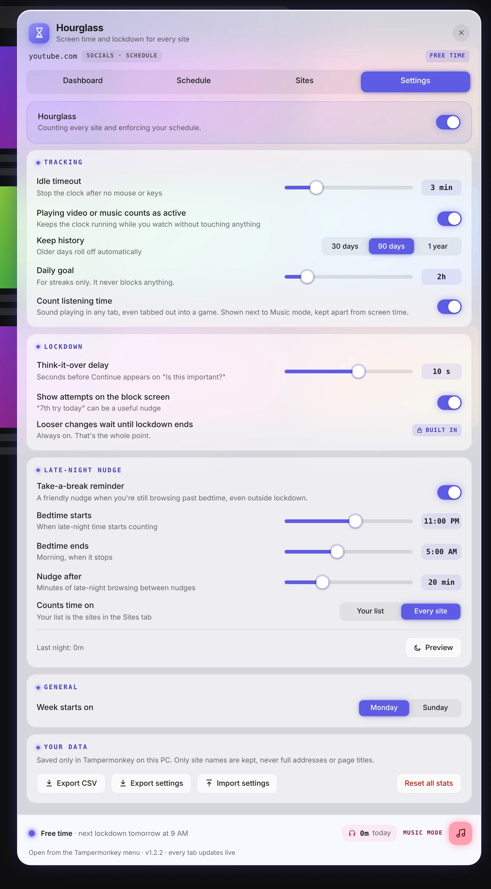
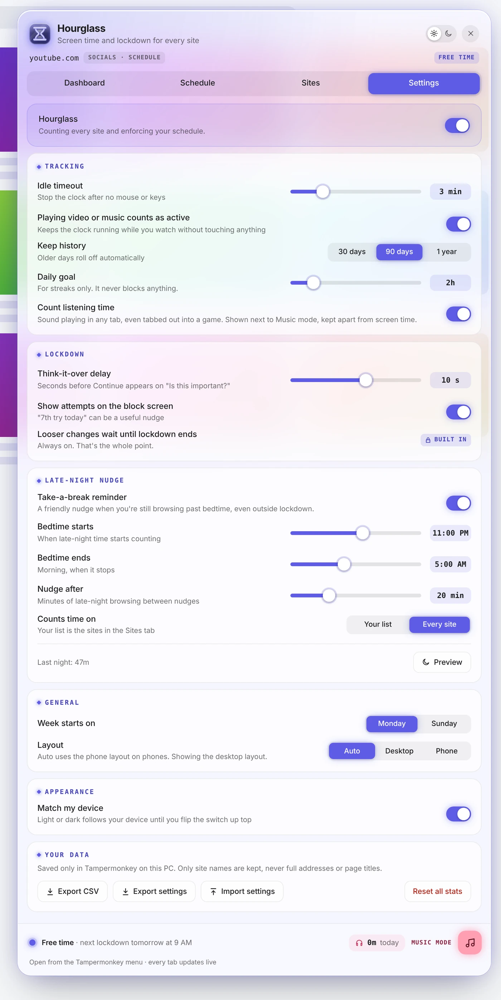
The same script switches to a phone layout on its own: a bottom-sheet menu, a trimmed dashboard you can tap for details, and bigger touch targets. Open it from the Tampermonkey menu, or from the Open Hourglass link on any block screen.
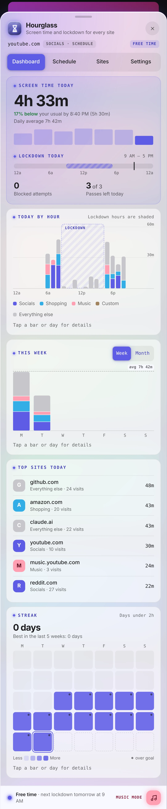
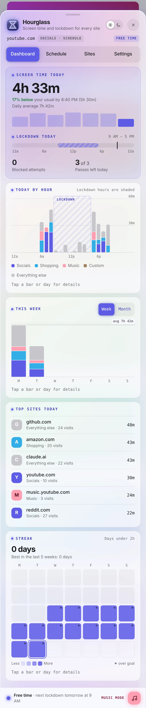
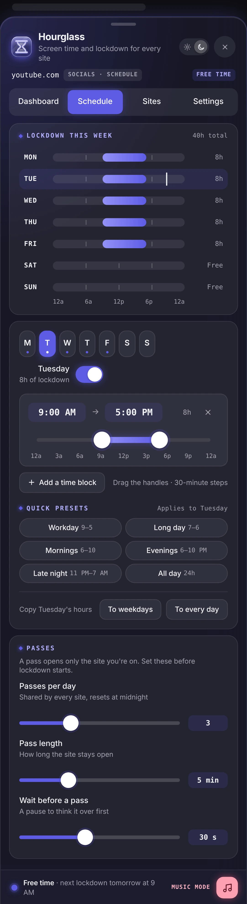
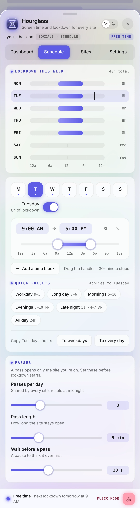
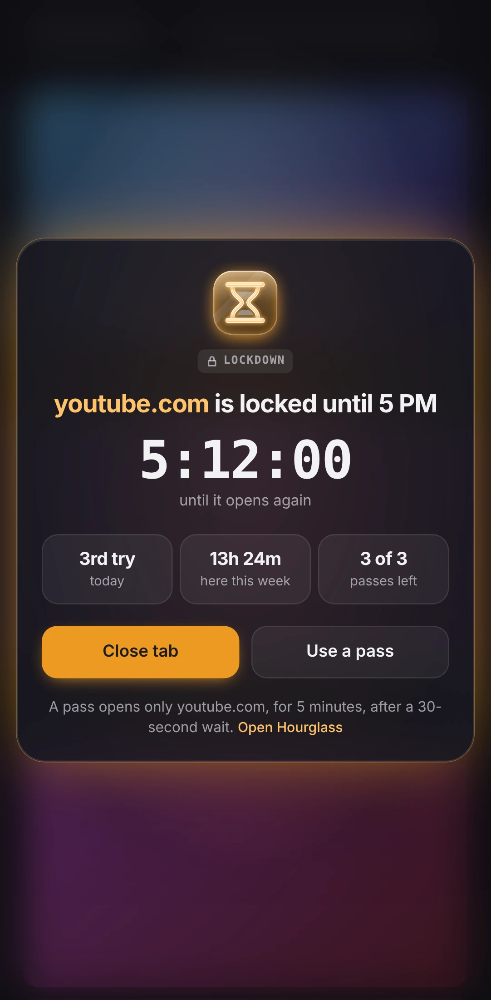
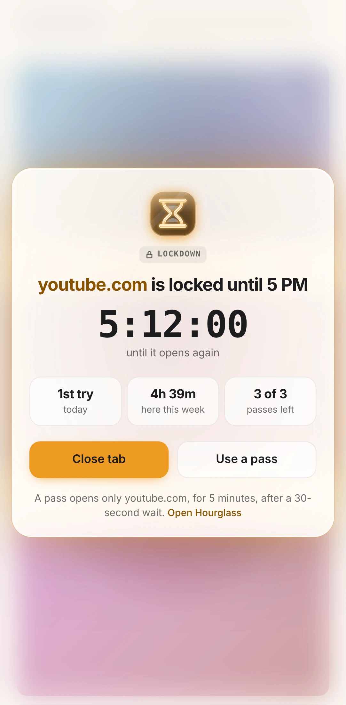
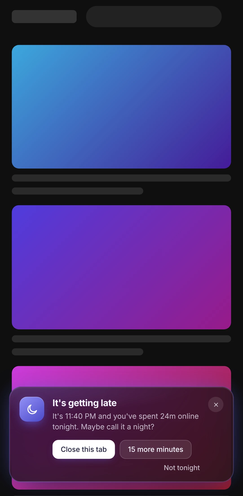
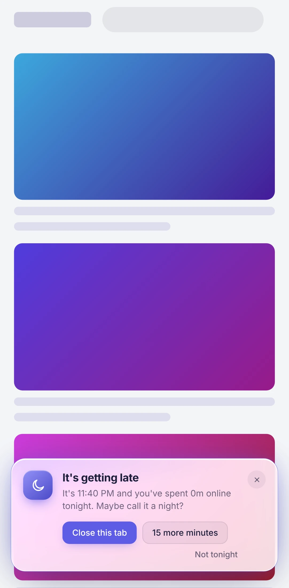